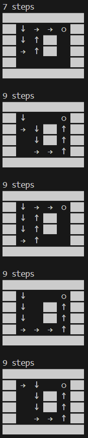

总结
Lecture 30 课程总结¶
-
fork-based DFS: 如果我们使用深度优先搜索，总是需要维护当前的 “搜索状态”。通常这是通过将状态作为参数传递实现的 (当然，也可以用维护全局状态的方式实现)。借助 fork()，我们可以在每个搜索分支创建一个当前状态的快照，实现并行搜索。
并行搜索：通过创建子进程，程序可以同时在多个路径上进行搜索，这大大提高了搜索效率。每个子进程都会探索一个可能的路径，而父进程则负责等待所有子进程完成。
1 2 3 4 5 6 7 8 9 10 11 12 13 14 15 16 17 18 19 20 21 22 23 24 25 26 27 28 29 30 31 32 33 34 35 36 37 38 39 40 41 42 43 44 45 46 47 48 49 50 51 52 53 54 55 56 57 58 59 60 61 62 63 64 65 66 67 68 69 70 71 72 73 74 75 76 77 78 79 80 81 82 83 84 85 86 87 88 89 90 91 92 93 94 95 96 97 98 99 100 101 102 103 104
#include <stdio.h> #include <unistd.h> #include <stdint.h> #include <assert.h> #include <stdlib.h> #include <string.h> #include <errno.h> #include <sys/wait.h> #define DEST '+' #define EMPTY '.' struct move { int move, x, y; } moves[] = { {'>', 0, 1}, {'v', 1, 0}, {'<', 0, -1}, {'^', -1, 0}, }; char map[][512] = { "######", "#...+#", "#..#.#", "#..#.#", "#....#", "######", "", }; void display(int steps); void dfs(int x, int y, int steps); int main() { dfs(1, 1, 0); } void dfs(int x, int y, int steps) { // Each search level gets 1 second of delay. sleep(1); if (map[x][y] == DEST) { display(steps); exit(0); } else { int nfork = 0; for (struct move *m = moves; m < moves + 4; m++) { int x1 = x + m->x, y1 = y + m->y; int pid = fork(); assert(pid >= 0); if (pid == 0) { // Forked worker process map[x][y] = m->move; if (map[x1][y1] == DEST || map[x1][y1] == EMPTY) { dfs(x1, y1, steps + 1); // 只有下一个搜索的位置是DEST或EMPTY，才递归搜索 // 已搜索过的地方就不再重复了 } exit(0); } else { nfork++; // If we wait here, the search will be serialized. // waitpid(pid, NULL, 0); } } while (nfork--) // 等待所有子进程结束 wait(NULL); } } void display(int steps) { #define append(buf, ...) sprintf(buf + strlen(buf), __VA_ARGS__) char buf[4096] = {0}; append(buf, "%d steps\n", steps); for (int i = 0; map[i][0]; i++) { for (const char *s = map[i]; *s; s++) { const char *draw; switch (*s) { case EMPTY: draw = " "; break; case DEST: draw = " ○ "; break; case '>': draw = " → "; break; case '<': draw = " ← "; break; case '^': draw = " ↑ "; break; case 'v': draw = " ↓ "; break; default: draw = "▇▇▇"; break; } append(buf, draw); } append(buf, "\n"); } append(buf, "\n"); write(STDOUT_FILENO, buf, strlen(buf)); }可以看到越往后的steps都是一瞬间输出结果的，例如9 steps的所有结果都是同时输出的。
